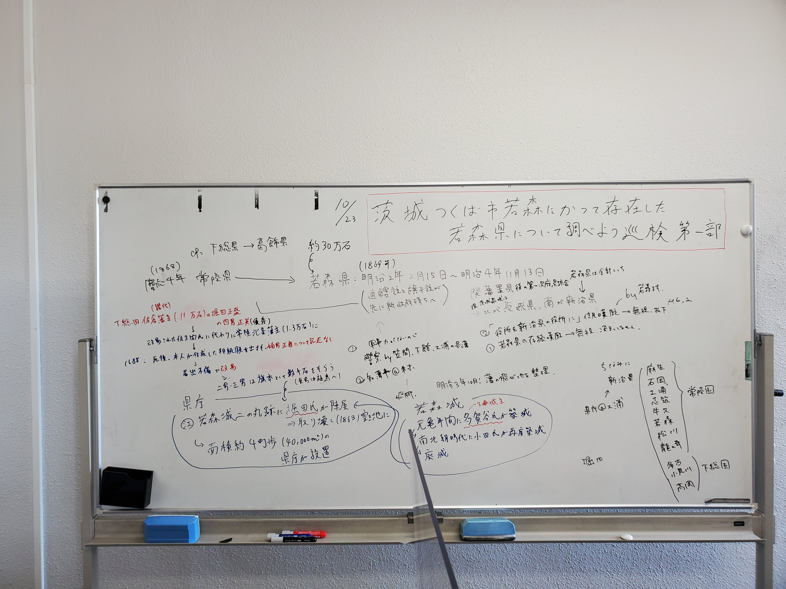

FEATURES
特集
つくば市にかつて存在した若森県を調べよう巡検
2022/10/23
2022年10月23日に「茨城県つくば市若森にかつて存在した若森県について調べよう巡検」を行いました。筑波大学中央図書館にて文献に当たり、明治期の廃藩置県制度について理解が深まったほか、江戸末期～明治期のつくば市の歴史、有力者についての知見を得ることができました。
文献調査の様子
また、旧若森県庁跡・若森城跡周辺を散策し、歴史の残り香漂う街並みを散策しながら、旧道が繋ぐ周辺のまちとの交流について思いを馳せました。日常生活では知り得ない筑波の歴史について改めて目を向ける学びの深い巡検となりました。